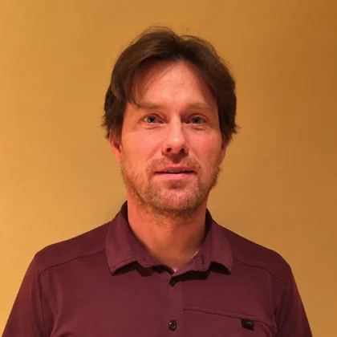

Alan Lynch
Professor

Lead Organizer
Alan F. Lynch received his Ph.D. in Electrical and Computer Engineering from the University of Toronto in 1999. From 1999 to 2001, he was a postdoctoral researcher at the Institut fuer Regelungs und Steuerungstheorie at TU Dresden. He joined the Department of Electrical and Computer Engineering at the University of Alberta in 2001, where he is a Professor. From 2009 to 2010, he was a Humboldt Research Fellow at the Institut fuer Systemtheorie und Regelungstechnik (IST), Universitaet Stuttgart. In 2017, he was a visiting professor at the Lehrstuhl fuer Systemtheorie und Regelungstechnik (LSR), Universitaet des Saarlandes. His research interests include nonlinear control and estimation, with applications to electrical, electromechanical, and robotic systems. Since about 2010, he has worked on control and estimation problems for helicopter and multirotor drones. His current research emphasizes aerial manipulation, extending the capabilities of drones to interact physically with their surroundings. His work includes the development of a fully actuated tilt-rotor aerial manipulator, combining drone flight with robotic manipulation.